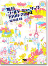

|
|
|
|
2005'07 ここでご紹介した本はいずれも最寄りの書店、または当ホームページ「ご購入について」の中のオンライン書店等経由でお求めいただけます。 |
北中正和さん『毎日ワールド・ミュージック』刊行記念イベントのお知らせ 北中正和さんの新刊を記念して、というかそれを肴に、陽気な夏の一夜を過ごしましょう。場所は渋谷のエル・スール・レコーズエル・スールの原田尊志と北中さんの楽しいおしゃべりと、ワールド・ミュージックをDJします。 日時 2005年7月31日（日）19時〜 どなたでも参加できます。ふらっとのぞきにきてください。 |
渋谷の古書店フライング・ブックスが本になりました！ 「Flying Booksは文学的なロックンロール・ラウンジであり、今の日本の若者たちが創り上げようとしているNEW CULTUREの中心的空間だ!」
|
|||
出版社10社共同企画「四六判宣言」第６弾のご案内です。＜盛夏企画＞ 「四六判宣言―文庫では読めない本たち―」は今年で６回目の開催を迎えます。 |
映画『Little Birds』が順次公開中！ 本当のイラク戦争の姿を描いた話題作、『Little Birds-イラク戦火の家族たち-』が、４月23日新宿K's Cinemaを皮切りに、全国主要都市で順次公開されています。アメリカ軍によるイラク侵攻以来、「News23」などで精力的にイラクからの中継リポートを続け数々の賞を受賞したジャーナリスト綿井健陽監督が、１年半の取材映像から完成させた劇場用映画です。公開と同時に、最前線のレポート、撮影日記をまとめたノンフィクション『リトルバーズ──戦火のバグダッドから』も小社より４月末に発売。テレビでは伝えられることのなかった戦争の現実を、受けとめてみてください。 新潟 札幌 京都 福岡 福島 他 全国主要都市にて順次公開 ●公式ホームページ |
『テレピン月日』の大竹伸朗さん個展 作家の、日常の心に浮かんだ風景を描いた作品が展示されます。 'On paper'大竹伸朗展 |
好評連載中の小野博さん、写真集刊行！ 13人の写真家が、EU全25カ国を撮りおろした写真集シリーズ「In-between」全14巻が、2005年6月から、有限会社オシリスより販売されます。当ホームページで好評連載の小野博さんの写真集は、7月10日の発売です。 主催・発行：EU・ジャパンフェスト日本委員会 販売に関する問い合わせ：有限会社オシリス |
||
朝日カルチャーセンター公開講座に注目！ |
信田さよ子さん講演スケジュール 「新・愛と執着のはざま」を好評連載の信田さよ子さんが、日本各地で講演会を行います。詳細は以下のとおりです。 仙台市 公開シンポジウム テーマ「家庭内の暴力-この10年を振り返る」 女性に対する暴力をなくす運動週間 |
『「心」と戦争』『平和と平等をあきらめない』が好評の高橋哲哉さんの講演会ご案内です。 第18回靖国・政教分離訴訟全国交流集会 第4回平和を考える市民講座 講演会「靖国問題 高橋哲哉」 全戦没者を悼み平和を願うつどい2005 平和旬間講演会 戦後６０年８・１４集会 第３８回平和記念日集会 |
明川哲也さん出演の『爆笑問題のススメ』がDVDに! 毎回多彩な作家ゲストを迎えるテレビのトークバラエティーがDVDになりました。「作家の目線V.S爆笑問題の目線」で熱く切り込んでいきます。核心は突いてはいても涙を飲んでカットせざるを得なかった未放送シーンを、ふんだんに収録。番組を見ていない人はもちろん、見た人にも新たなサプライズが待っています! 弊社刊『メキシコ人はなぜハゲないし、死なないのか』も好評の明川哲也さん(TETSUYA）も登場します。 「爆笑問題のススメVol.2 実はこんなトーク、カットしてました 日本を代表する裏・文化人 編」 収録作家（順不同）: 発売:2004年12月22日 |
|
本に掲載された村木与四郎さん、忍さんのスケッチの一部を、複製して販売します。
村木与四郎さんのサイン入りで、A3サイズの複製画を額装したものを４点、各100枚の限定販売。さらに、ポストカードを12枚1組で好評販売中。
|
アニメーション監督 原 恵一の世界 浜野保樹編 2300円 ミャンマーという国への旅 ラーキン 3000円 RAW COMMUNICATION 若野 桂 3500円 アメリカン･コミックス大全 小野耕世 予価2600円 いのちのあさがおが咲いたよ 丹後まみこ 1600円 探偵小説のたのしみ（復刻版）植草甚一 1470円 フリージャズの勉強（復刻版）植草甚一 1470円 アンクルJの雑学百科（復刻版）植草甚一 1470円 |
| しあわせのねだん 角田光代/3刷一四七〇円 声をなくして 永沢光雄/2刷一八九〇円 なぜ「話」は通じないのか 仲正昌樹/2刷一六八〇円 「治安国家」拒否宣言 斎藤貴男･沢田竜夫編著/2刷一七八五円 リトルバーズ 綿井健陽/2刷一六八〇円 人生の特別な一瞬 長田弘/5刷一六八〇円 深呼吸の必要 長田弘/40刷一八九〇円 「おじさん」的思考 内田樹/11刷一九九五円 不安定だから強い 田中聡/7刷一六八〇円 がんから始まる 岸本葉子/10刷一六八〇円 スローな手づくり調味料 林弘子/3刷一六八〇円 大切にしたいものは何？ 鶴見俊輔/8刷一四七〇円 マウス１ スピーゲルマン/13刷二一〇〇円 マウス２ スピーゲルマン/8刷二一〇〇円 |